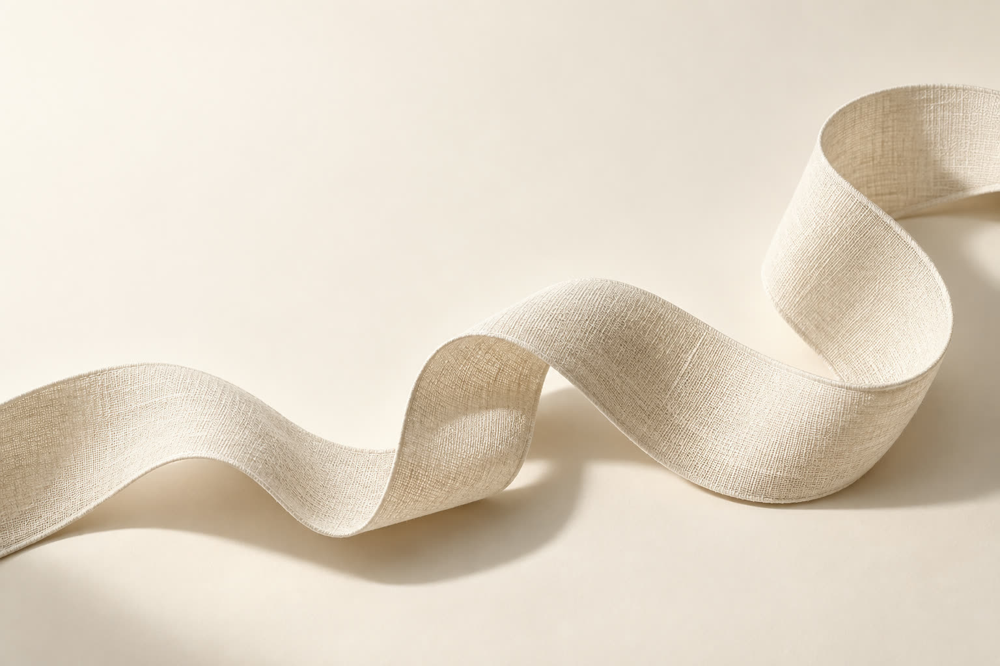

Берём вашу
реальную ситуацию
На живой встрече смотрим, что произошло, как вы отреагировали и что заметили в теле. Вы сами выбираете, чем готовы поделиться.
«Я снова взяла чужую задачу. Хотя сил уже не было».
5 недель, чтобы замечать свои реакции и пробовать действовать по-своему. Для тех, кто привык терпеть, молчать и брать всё на себя.
Уже решили говорить о своих желаниях — и снова согласились. Хотели отдохнуть — и взяли ещё одну задачу. Нужные слова нашлись, когда разговор закончился.
В «Тело помнит» мы разбираем такие ситуации, замечаем чувства и телесные сигналы, пробуем другой ответ. А потом переносим эту практику в обычную жизнь.
Выберите откликающуюся фразу. Посмотрите, чему можно уделить внимание на программе.
Это знакомство с подходом, не психологический тест. Ответы никуда не отправляются.
На программе можно исследовать, что происходит перед привычным согласием: какие чувства вы замечаете, чего опасаетесь, чего хотите сами.
Замечать свой первый отклик и брать время на ответ: «Я подумаю и вернусь к тебе». Обсуждать, что помогает, а что пока трудно.

Замечать, что с вами происходит.
Слышать своё желание.
Выбирать следующий шаг.
Одного понимания бывает мало. Поэтому в программе есть разбор, практика и поддержка между встречами.
На живой встрече смотрим, что произошло, как вы отреагировали и что заметили в теле. Вы сами выбираете, чем готовы поделиться.
«Я снова взяла чужую задачу. Хотя сил уже не было».
Через телесную практику и обсуждение исследуем, что помогает вернуть внимание к себе. Формулируем небольшое действие, которое вы готовы попробовать.
«В следующий раз сначала проверю, есть ли у меня на это время».
Между встречами вы пробуете выбранный шаг. В чате и дневнике можно замечать изменения, возвращаться к трудностям и обсуждать их с ведущими.
«Я взяла паузу. Отказать пока сложно — хочу разобраться, что меня останавливает».
Пример показывает логику работы. Ваш запрос, темп и опыт могут быть другими.
Психосоматические разборы, телесные практики и внедрение новых действий. Онлайн, в живом контакте с ведущими.
У каждого шага —
своё место.
У вас — свой темп.
Можно остановить упражнение, оставить камеру выключенной и выбрать, насколько открыто говорить в группе.
Условия участияЗнакомимся с собственными сигналами усталости, тревоги и перегруза. Подбираем способы самоподдержки.
В жизни: замечать момент, когда нужна пауза, отдых или помощь.
Исследуем, что вы обычно делаете под давлением: соглашаетесь, замираете, избегаете разговора или уходите в работу.
В жизни: замечать первые сигналы привычного сценария.
Практикуем остановку перед автоматическим ответом. Проверяем, чего хочется вам и на что сейчас есть силы.
В жизни: дать себе время перед согласием или решением.
Пробуем говорить о чувствах, обозначать границы и просить о помощи. Обсуждаем то, что пока даётся непросто.
В жизни: выбрать посильное новое действие в конкретном разговоре.
Собираем личную карту сигналов, способов самоподдержки и действий. Определяем, что вы хотите продолжить после программы.
В жизни: возвращаться к тому, что уже помогает именно вам.
Разобраться в реакции. Попробовать новое. Найти для этого место в повседневной жизни.

Работает через психологическое консультирование, психосоматический подход и телесные практики. Помогает исследовать связь между ситуацией, чувствами и реакцией тела.
Ведёт разборы и практики. Помогает распознать автоматическую реакцию и выбрать бережный темп работы.
Познакомиться в Telegram ↗
Соавтор программы и навигатор внедрения. Помогает превратить выводы после разбора в понятный следующий шаг в отношениях, работе и повседневной жизни.
Поддерживает внедрение между встречами. Высшее образование — управление персоналом, БашГУ, диплом с отличием, 2021 год.
Написать Альмире ↗У каждой — свой запрос и свой опыт. Вот что женщины отметили после групповой программы.
«Появились лёгкость, облегчение в теле, больше энергии и опоры на себя. Стало проще выдерживать сложные процессы и защищать свои границы».
Елена · участница групповой программы
Пришла после серьёзной психологической работы: причины реакций были понятны, но напряжение сохранялось. В группе училась замечать телесный отклик и опираться на собственные чувства.
«После практик — состояние как после глубокого сна, восстановленность и лёгкость. Я посмотрела на мужа другими глазами и снова почувствовала любовь».
Наталья · участница групповой программы
Пришла с напряжением и конфликтом в браке. В работе исследовала привычку не защищать себя и пробовала возвращать себе право на голос и собственное мнение.
До работы: межпозвоночная грыжа, сильная боль в спине, ночи без сна. Юлия обращалась в специализированный институт, чтобы узнать об операции.
По описанию её истории, после первой встречи удалось спать ночью без боли. После второй сон стабилизировался, боль снизилась. Юлия отказалась от планируемого вмешательства и выбрала восстановление через физическую нагрузку, укрепление мышц и работу с привычными реакциями.
Она также начала фиксировать свои достижения и решила делегировать часть управления бизнесом.
Это история индивидуальной работы, не результат групповой программы и не рекомендация отказываться от операции. Решения о лечении принимаются с врачом.
Личный опыт участниц не гарантирует такой же результат у другого человека. Программа не диагностирует и не лечит заболевания.

Между встречами жизнь продолжается. В личном приложении можно записать наблюдение, вернуться к практике и заметить, что меняется.
Приложение входит в участие и работает в Telegram. Для общения с ведущими — закрытый чат группы.
Оставьте заявку. Анастасия свяжется с вами в течение дня, ответит на вопросы и поможет понять, подходит ли вам программа.
Заявка не списывает оплату. Если вы решите участвовать, Анастасия отправит ссылку на оплату и инструкции перед стартом.
Сначала задать вопрос в Telegram ↗12 000 ₽15 000 ₽
Раннее бронирование до 8 октября включительно
Запись до 14 октября включительно. Точное время встреч уточните у Анастасии перед оплатой.
Фокус программы — заметить реакцию в моменте, попробовать другой ответ и перенести его в конкретные разговоры и решения. Программа может дополнять личную терапию, но не заменяет её. Ваш запрос можно обсудить с Анастасией до оплаты.
Подготовка не требуется. Работа начинается с наблюдения за понятными вещами: дыханием, ощущениями, напряжением и привычными реакциями. Комфортный темп и подходящий формат обсудите с ведущей.
Вы сами выбираете, чем делиться. Можно отказаться от упражнения, остановиться или не выносить ситуацию на общий разбор. Камеру на практиках можно оставить выключенной.
На программе вы практикуете наблюдение за своими реакциями, способы самоподдержки и новые действия. Изменения и темп индивидуальны. До оплаты Анастасия поможет сопоставить ваш запрос с возможностями группового формата.
Программа идёт с 15 октября по 12 ноября 2026 года. Точное время и расписание встреч уточните у Анастасии перед оплатой, чтобы заранее оценить, подходит ли вам участие.
«Тело помнит» — групповая практическая онлайн-программа с психологическим и телесным подходом. Она не диагностирует и не лечит заболевания, не заменяет врача или индивидуальную психотерапию.
Начать можно с простого разговора.
Расскажите, с чем вам хотелось бы поработать.